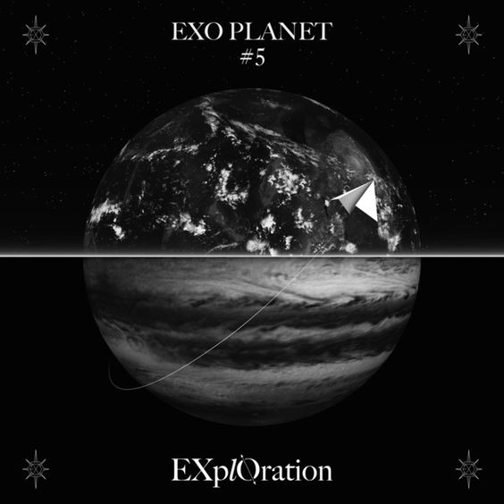
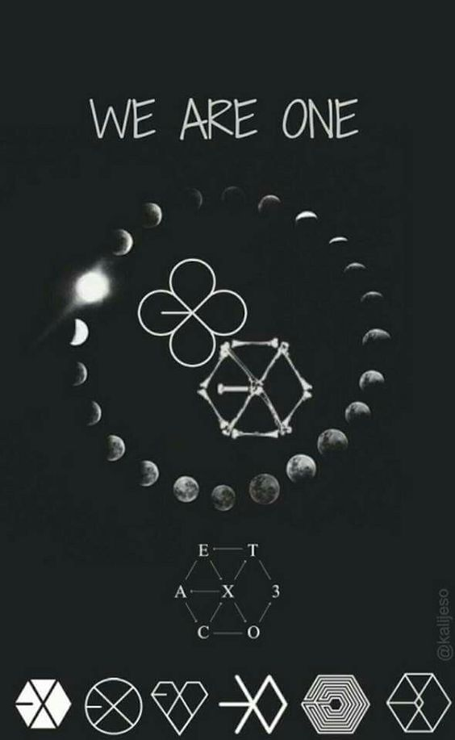
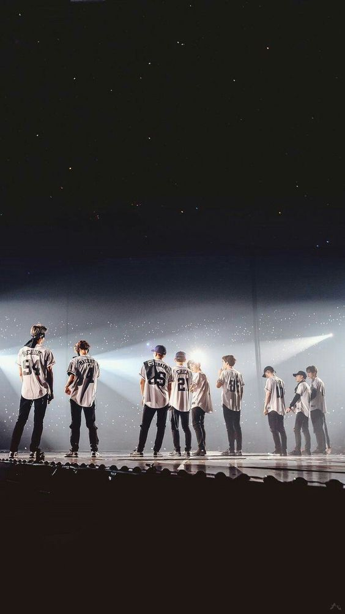
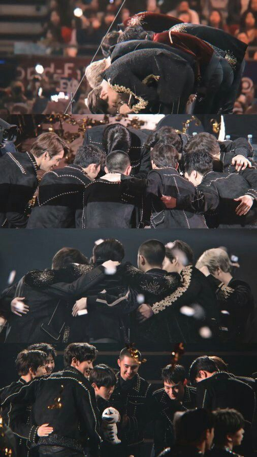
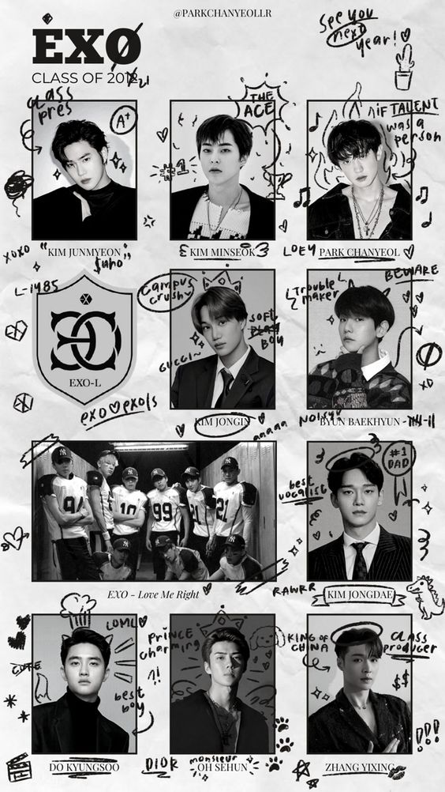
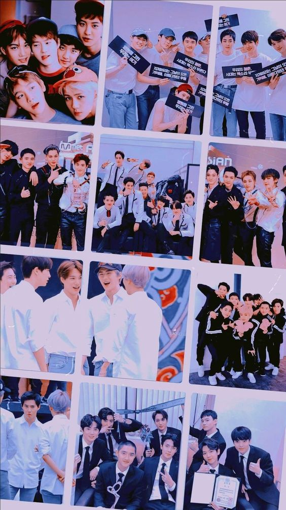
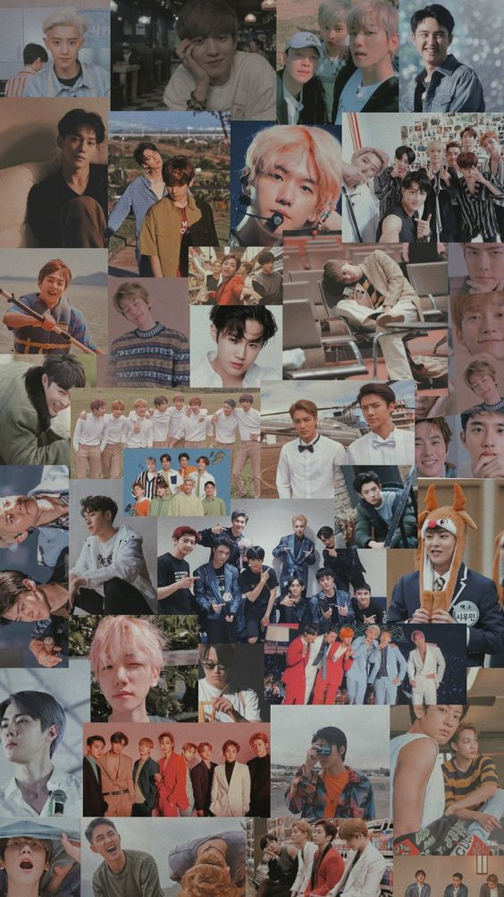
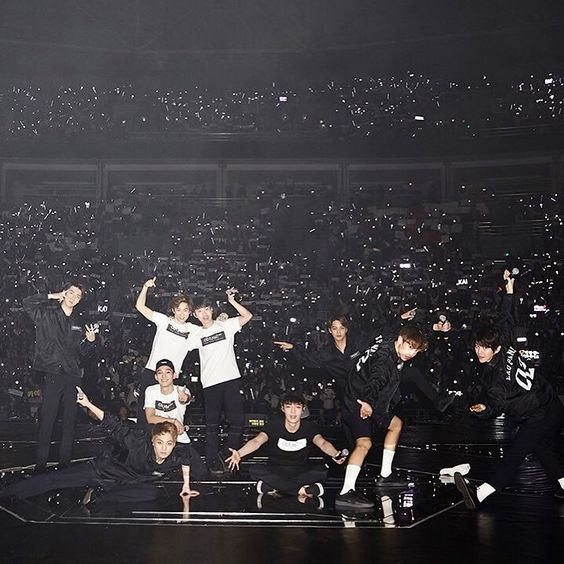

|  |
|  |
|  |
|  |
|  |
|  |
|  |
|  |
WELCOME TO EXO PLANET
Made by : Desy Setia
SUHO
-
Nama Panggung: Suho (수호)
-
Nama Lahir: Kim Jun Myeon (김준면)
-
Posisi: Leader, Lead Vokalis
-
Tanggal Lahir: 22 Mei 1991
-
Zodiak: Gemini
-
Kewarganegaraan: Korea Selatan
-
Tinggi Badan: 172 cm
-
Golongan Darah: AB
-
Kampung Halaman: Seoul, Korea Selatan
-
Subunit: EXO-K
-
Kekuatan Super (Badge): Air
-
Instagram: @kimjuncotton
XIUMIN
- Nama Panggung: Xiumin (시우민)
- Nama Korea: Kim Min Seok (김민석)
- Posisi: Lead Vocalist, Lead Dancer, Rapper
- Ulang Tahun: 26 Maret 1990
- Zodiak: Aries
- Kebangsaan: Korea
- Tinggi Badan: 173 cm (5’8″)
- Golongan Darah: B
- Kampung Halaman: Guri, Provinsi Gyeonggi
- Keahlian: Taekwondo, kendo
- Sub-unit: EXO-M, EXO-CBX
- Kekuatan Super (Badge): Frost (Snowflake)
- Instagram: @e_xiu_o
CHEN
- Nama Panggung: Chen (첸)
- Nama Korea: Kim Jong Dae (김종대)
- Posisi: Vokalis Utama
- Tanggal Lahir: 21 September 1992
- Zodiak: Virgo
- Kewarganegaraan: Korea Selatan
- Tinggi Badan: 173 Cm
- Golongan Darah: B
- Asal: Siheung, Provinsi Gyeonggi
- Kemampuan: Bernyanyi, Bermain Piano
- Youtube: Chen
- Subunit: EXO-M, EXO-CBX
- Kekuatan Super (Badge): Guntur (Petir)
CHANYEOL
- Nama Panggung: Chanyeol (찬열)
- Nama Lahir: Park Chan Yeol (박찬열)
- Posisi: Main Rapper, Vokalis
- Tanggal Lahir: 27 November 1992
- Zodiak: Sagittarius
- Warga Negara: Korea
- Tinggi Badan: 186 cm (6’1″)
- Golongan Darah: A
- Kampung Halaman: Seoul, South Korea
- Spesialisasi: Bermain instrumen musik (gitar, drum, bass, djembe), rap, akting
- Subunit: EXO-K, EXO-SC
- Super Power (Badge): Fire (Phoenix)
- Instagram: @real__pcy
- Soundcloud: real__pcy
BAEKHYUN
- Nama Panggung: Baekhyun (백현)
- Nama Lahir: Byun Baek Hyun (변백현)
- Posisi: Main Vocalist
- Tanggal Lahir: 6 May 1992
- Zodiak: Taurus
- Warga Negara: Korea
- Tinggi Badan: 174 cm (5’9″)
- Golongan Darah: O
- Kampung Halaman: Bucheon, Provinsi Gyeonggi, Korea Selatan
- Spesialisasi: Hapkido, piano
- Sub-unit: EXO-K, EXO-CBX
- Super Power (Badge): Light (Sun)
- Instagram: @baekhyunee_exo
- Twitter: @b_hundred_hyun
- Youtube: Baekhyun
LAY
- Nama Panggung: Lay (레이)
- Nama Lahir: Zhang Jiashuai, tapi nama yang disahkan adalah Zhang Yixing (张艺兴)
- Nama Korea: Jang Ye Heung (장예흥)
- Posisi: Dancer Utama, Vokalis
- Tanggal Lahir: 7 Oktober 1991
- Zodiak: Libra
- Tinggi Badan: 177 cm (5’10”)
- Berat Badan: 60 kg
- Golongan Darah: A
- Kebangsaan: Tiongkok
- Kampung Halaman: Changsha, Hunan, Tiongkok
- Sub-unit: EXO-M
- Keahlian Khusus: Gitar, menari, piano
- Kekuatan Super (Badge): Kekuatan Penyembuh (Unicorn)
- Instagram: @layzhang
- Twitter: @layzhang
D.O.
- Nama Panggung: D.O (디오)
- Nama Asli: Do Kyung Soo (도경수)
- Posisi: Vokalis Utama
- Tanggal Lahir: 12 Januari 1993
- Zodiak: Capricorn
- Kebangsaan: Korean
- Tinggi: 173 cm (5’8″)
- Golongan Darah: A
- Tempat Lahir: Goyang, Provinsi Gyeonggi, Korea Selatan
- Keahlian: Bernyanyi, beat box
- Subunit: EXO-K
- Kekuatan Super (Badge): Terrakinesis
KAI
- Nama Panggung: Kai (카이)
- Nama Asli: Kim Jong In (김종인)
- Posisi: Main Dancer, Vokalis, Rapper, Face of The Group
- Tanggal Lahir: 14 Januari 1994
- Zodiak: Capricorn
- Warga Negara: Korea
- Tinggi Badan: 181 cm (5’11″)
- Golongan Darah: A
- Kampung Halaman: Seoul, Korea Selatan
- Spesialisasi: Menari (ballet, jazz, hip hop, popping, rocking)
- Sub-unit: EXO-K
- Kekuatan Super (Badge): Teleportation
- Instagram: @zkdlin
- Youtube: Kai
SEHUN
- Nama Panggung: Sehun (세훈)
- Nama Kelahiran: Oh Se Hun (오세훈)
- Posisi: Penari Utama, Rapper, Sub-Vokalis, Visual, Maknae
- Ulang Tahun: 12 April 1994
- Zodiak: Aries
- Kebangsaan: Korea
- Tinggi: 183 cm (6’0 ″)
- Golongan Darah: O
- Kampung Halaman: Seoul, Korea Selatan
- Spesialisasi: Menari, akting
- Instagram: @oohsehun
- Subunit: EXO-K, EXO-SC
- Kekuatan Super (Badge): Angin
Copyright to EXO 2023 All right reserved.